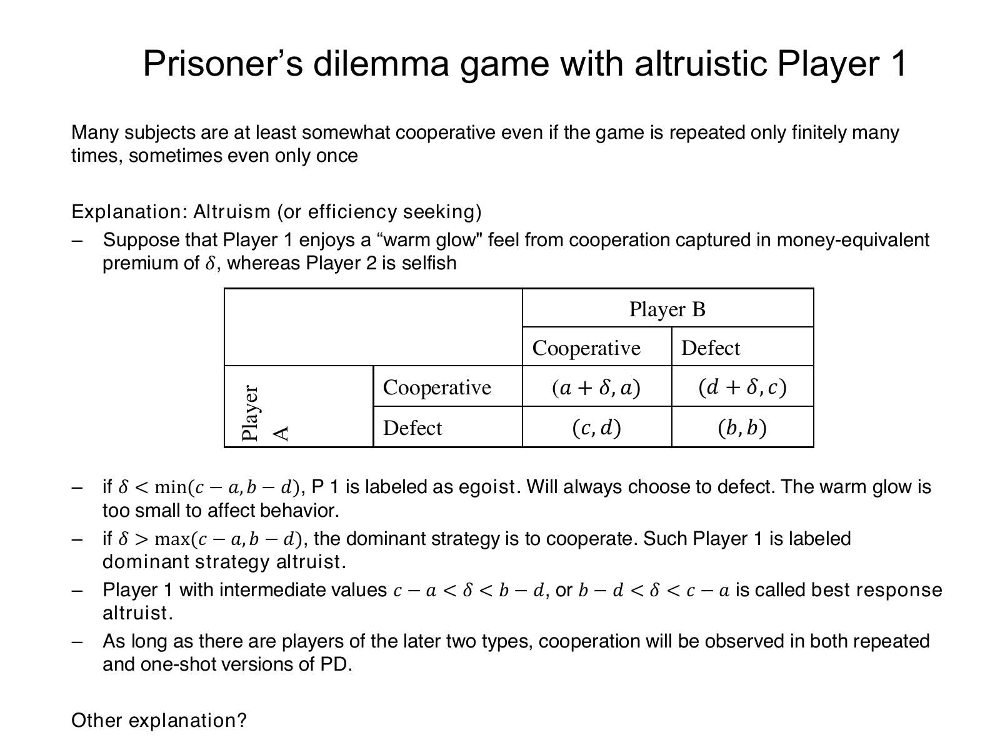

Derive warm-glow thresholds and belief-dependent cooperation
Explanation, worked examples and practice
Useful first: Distinguish reciprocity, payoff concerns and efficiency, Derive prisoner's-dilemma dominance and finite repetition
Outcome and conditions
Calculate A’s best responses and belief-dependent action under the supported warm-glow model, including both threshold orderings, boundary ties and the remaining selfish player’s response.
Study conditions, assessment scope and sources
- R1: Construct the altered payoff matrix, add \(\delta\) only to A’s cooperative-row utility and distinguish warm glow from direct other-payoff weighting.
- R2: Derive \(c-a\) and \(b-d\) thresholds, strict low/high classifications and equality ties; analyze both intermediate orderings rather than imposing one.
- R3: Derive expected cooperation advantage \(\delta -[\pi (c-a)+(1-\pi )(b-d)]\), calculate choices including a belief tie and keep selfish B’s incentives unchanged.
- R4: Explain the original numerical threshold 4, empty intermediate interval and A cooperation against selfish B’s defection rather than mutual cooperation; qualify the broad source assertion.
- R5: Distinguish qualitative positive reciprocity plus belief from unconditional warm glow and sequential observed treatment; retain missing quantitative mechanism/study rates and conditional welfare claim.
Finished-note locations:
- A warm-glow premium can change best responses
- Deriving the two thresholds
- The numerical threshold and a source qualification
- Reciprocity needs an expectation about the other player
- What these games establish
Use P002/V002/ingest 3 and O007-C1, objective revision 2. Supported instruction can use this block and linked notes. Independent acquisition and delayed attempts are closed note, with blank paper and pen only; no calculator, device, AI, hint or key exposure. Present only the question before the learner responds; keys remain teacher-side. Unknown help/access is unscorable for independence. Hypothetical inputs instantiate supported mechanisms and are not empirical findings.
Prerequisites and checks
Check the prerequisites
- O004: Separating treatment dependence from unconditional payoff/act concerns prevents conflating reciprocity and warm glow. Repair route: Explanation steps
- O006: Own-payoff comparisons and unilateral best responses are needed before altering the cooperative row. Repair route: Explanation steps
O007-P1 v1 checks O006 own-payoff comparisons: “A’s payoff is 14 from D and 11 from C against a fixed B action. Which does a monetary A choose and what cost would a cooperation premium have to cover?” Key: D; cost 3. Pass requires both; partial is an arithmetic slip; fail means changing B’s action during the comparison. Repair O006 Explanation steps 1–2, then O007 Worked example. O007-P2 v1 checks O004 treatment distinction: “Does a benefit from A’s own act of cooperation automatically depend on B’s prior kind treatment?” Key: no; unconditional act benefit differs from treatment-dependent reciprocity. Pass requires contrast; partial if only no; fail if equated. Repair O004 Explanation steps 1 and 5, then O007 Motivation. Qualifying committed current-compatible O006/O004 evidence can waive its corresponding check. Neither diagnostic uses upstream I1/I2 or substitutes for acquisition.
Entry checks have item version v1, and pass/partial/fail plus repair routes above. Their exact limited outcomes do not certify the upstream objective. A waiver requires actual committed compatible evidence, never familiarity or assumed mastery. If a diagnostic fails, use its named prepared explanation and support before continuing; do not cycle through full upstream independent items just to diagnose.
Motivation, intuition, and definitions
The cooperation premium compensates a private cost. The cost can differ depending on B’s action, so a premium between the two costs does not identify A’s action without its beliefs. Delta is in money-equivalent utility units and \(\pi\) is a probability in \([0,1]\); B remains self-regarding. Warm glow describes the benefit from A’s own cooperation, rather than a direct weight on B’s money.
Visual support:
- Social Preferences p35 Warm Glow Payoffs — inspected qualitative/source support; retrieve the finished note’s adjacent explanation.
Explanation steps
- Start from \(\mathrm{CC}:(a,a)\), \(\mathrm{CD}:(d,c)\), \(\mathrm{DC}:(c,d)\), \(\mathrm{DD}:(b,b)\), with \(c>a>b>d\). Add \(\delta\) only when A chooses \(C\): \(\mathrm{CC}\) utility \((a+\delta ,a)\), \(\mathrm{CD}:(d+\delta,c)\); the other row remains \((c,d),(b,b)\). Money itself has not increased by \(\delta\).
- Against \(B=C\), compare \(a+\delta\) with \(c\): A strictly cooperates iff \(\delta >c-a\). Against \(B=D\) compare \(d+\delta\) with \(b\): cooperation iff \(\delta >b-d\). Equality is indifference in the corresponding comparison.
- Below both thresholds, \(D\) is strictly dominant (the lecture’s “egoist” behavior label, even if a small positive premium exists). Above both, \(C\) is strictly dominant (“dominant-strategy altruist”). Intermediate premiums are called “best-response altruists”, with two possible orderings: \(c-a<\delta <b-d\) yields \(C\) against \(C\) and \(D\) against \(D\); \(b-d<\delta <c-a\) yields \(D\) against \(C\) and \(C\) against \(D\). \(c>a>b>d\) alone cannot select an ordering.
- At a simultaneous choice A does not observe B’s current action. With \(\pi=\Pr(B=C)\), expected \(C\) utility is \(\pi(a+\delta)+(1-\pi)(d+\delta)\), expected \(D\) utility is \(\pi c+(1-\pi)b\). Subtract: \(\Delta U=\delta-[\pi(c-a)+(1-\pi)(b-d)]\). Choose \(C\) if positive, \(D\) if negative, tie if zero. This is the finished notes’ algebraic derivation, not an estimated belief model.
- B’s own monetary payoffs are unchanged; \(c>a\) and \(b>d\) keep \(D\) strictly dominant for B. Correctly anticipating a selfish B means \(\pi =0\), so compare \(\delta\) to \(b-d\). In the first intermediate ordering A then defects; in the second it cooperates. Therefore the lecture’s broad claim that any intermediate type guarantees observed cooperation requires qualification.
- In the original \(a=16,c=20,b=12,d=8\) matrix both costs are \(4\): \(\delta <4\) gives \(D\), \(\delta >4\) gives \(C\), \(\delta =4\) ties against either B action. No nonempty intermediate interval exists. A’s \(C\) at \(\delta >4\) is paired with B’s \(D\), not mutual cooperation.
- The separate reciprocity explanation requires a belief about kindness in a simultaneous game; a trustee instead observes the prior transfer in sequential trust. The notes supply no quantitative reciprocity threshold, full study methods or numerical cooperation rate. Social preferences can increase welfare, conditional on incentives, preferences and beliefs, rather than always doing so.
Read the full explanation
Reading context
Deliver these complete reused passages before the worked example; earlier concise prompts are checkpoints, not substitutes. Necessary prerequisites use the complete prepared lessons specified above.
Source passage
Origin: reused complete checked passage A warm-glow premium can change best responses; fingerprint e14303da01e107f5fec8496b95506702aef07ede33359781307e6befec155659. Heading depth alone is adapted.
A warm-glow premium can change best responses
The lecture observes that many subjects cooperate to some extent even in finitely repeated or one-shot versions. It proposes altruism or efficiency-seeking as one explanation, represented by a warm-glow premium \(\delta\) for Player 1's act of cooperating. The premium is measured in money-equivalent utility units and is added to Player 1's payoff whenever Player 1 cooperates, regardless of Player 2's action. Player 2 remains selfish. In this illustration Player 1 is A, the row player. This particular additive model captures a benefit from the act of cooperation; it is not the same formula as directly weighting the other person's payoff in the social-preference model. Social Preferences, physical PDF p. 35

Full source slide: only A's cooperative-row payoffs acquire \(\delta\). The source's classification and its final cooperation assertion remain visible; the assertion is qualified below. Social Preferences, physical PDF p. 35
Deriving the two thresholds
Agent unpacking of the lecture's altered matrix: when B cooperates, A compares \(a+\delta\) with \(c\). Cooperation is strictly preferred when
When B defects, A compares \(d+\delta\) with \(b\), giving
The two positive thresholds are the monetary costs of choosing cooperation in the two situations. If \(\delta<\min(c-a,b-d)\), neither cost is compensated and A strictly prefers defection against either action. The lecture labels this player an egoist in its behavioral classification, even though a small positive premium may be present. If \(\delta>\max(c-a,b-d)\), both costs are compensated and cooperation is strictly dominant: the lecture calls this a dominant-strategy altruist. At equality with either threshold, A is indifferent in the corresponding comparison, so the strict classifications do not apply there. Social Preferences, physical PDF p. 35; threshold derivation
For intermediate values, the lecture uses the name best-response altruist. There are two distinct orderings, and \(c>a>b>d\) alone does not choose between them:
| Ordering and intermediate premium | A's best response if B cooperates | A's best response if B defects |
|---|---|---|
| \(c-a<\delta<b-d\) | Cooperate | Defect |
| \(b-d<\delta<c-a\) | Defect | Cooperate |
In the first case cooperation is conditional on B's cooperation; in the second, the premium covers the cost of cooperating against defection but not the cost of cooperating against cooperation. Agent derivation with beliefs: if A assigns probability \(\pi\) to B cooperating, its expected utility advantage of cooperation is
A strictly cooperates if this expression is positive, defects if it is negative, and is indifferent at zero. Thus an intermediate premium generally requires beliefs about B's action to predict A's choice. This calculation unpacks the displayed matrix; the lecture does not supply this expected-utility equation. Social Preferences, physical PDF p. 35; agent derivation
The numerical threshold and a source qualification
In the numerical game, \(c-a=20-16=4\) and \(b-d=12-8=4\). Therefore \(\delta<4\) makes defection strictly dominant for A, while \(\delta>4\) makes cooperation strictly dominant. At \(\delta=4\), A is indifferent between the actions against either choice of B. There is no nonempty intermediate interval in this particular matrix because the two thresholds coincide. Since B remains selfish and its own payoffs are unchanged, B continues to defect. Consequently a premium greater than 4 predicts A cooperating against B's defection, rather than mutual cooperation. These are agent calculations from the source's numerical and altered matrices. Social Preferences, physical PDF p. 32 Social Preferences, physical PDF p. 35
Source assertion and limitation: PDF p. 35 says that cooperation will be observed whenever players include dominant-strategy altruists or best-response altruists. The claim is broader than the displayed matrix supports without qualifications. A dominant-strategy altruist does cooperate. But a best-response altruist with \(c-a<\delta<b-d\), correctly expecting the stipulated selfish B to defect, also defects. Conversely, a best-response altruist with \(b-d<\delta<c-a\) cooperates against B's defection. The source statement is retained here as a statement from the lecture; the payoff ordering and beliefs must be specified before extending it to every player in the intermediate category. Merely having that category in a population does not guarantee observed cooperation or mutual cooperation. Social Preferences, physical PDF p. 35, final bullet
Source passage
Origin: reused complete checked passage Reciprocity needs an expectation about the other player; fingerprint e14303da01e107f5fec8496b95506702aef07ede33359781307e6befec155659. Heading depth alone is adapted.
Reciprocity needs an expectation about the other player
The lecture's second explanation is positive reciprocity combined with the belief that the other person will cooperate. It cites Dawes and Thaler (1988) beside the observation that cooperation occurs even with a finite number of interactions, sometimes only once; the uploaded slide does not supply the underlying study design, sample, or numerical cooperation rate. Positive reciprocity means wanting to respond kindly to perceived kindness. In a simultaneous game there is no observed current action to reciprocate at the moment of choice, so an expectation about the other's cooperation is part of this proposed explanation. The lecture does not specify a separate payoff formula or a quantitative belief threshold for this mechanism. Social Preferences, physical PDF p. 36
This differs from the trust game, where the trustee observes the initial transfer before returning money. It also differs from the unconditional warm-glow premium: a desire to reward kindness depends on how the other player's behavior is perceived or expected. The reciprocity model makes this dependence explicit. Social Preferences, physical PDF p. 22 Social Preferences, physical PDF p. 36; connection between games
Source passage
Origin: reused complete checked passage What these games establish; fingerprint e14303da01e107f5fec8496b95506702aef07ede33359781307e6befec155659. Heading depth alone is adapted.
What these games establish
The trust game separates surplus creation from its subsequent division; the prisoner's dilemma exposes a dominant individual incentive that conflicts with mutual gains. Their no-trust or defection benchmarks follow from specified self-regarding preferences and expectations, not from the game labels alone. The lecture's empirical descriptions motivate broader preferences, and its warm-glow matrix shows exactly how a sufficiently large nonmonetary benefit can change a best response. Intermediate benefits and reciprocity require attention to the other player's expected behavior. The lecture's final lesson is that many motivations extend beyond pure selfishness and that social preferences can increase social welfare, a possibility whose realization depends on the game, preferences, and beliefs. Social Preferences, physical PDF p. 37
Worked example
O007-W1 — Two threshold orders
Item version: v1. Role: worked instruction.
Setup: Agent-created hypothetical pair: game F has \((a,c,b,d)=(6,7,4,0), \delta =2\); game G has \((6,10,4,3), \delta =2\). Compute altered matrices, best responses and \(\pi =0,1/2,1\) choices, including a tie probability; compare the original source matrix and reciprocity limits.
Worked reasoning and result: For \((a,c,b,d)=(6,7,4,0)\), \(\delta=2\), the altered utility matrix is \(\mathrm{CC}=(8,6)\), \(\mathrm{CD}=(2,7)\), \(\mathrm{DC}=(7,0)\), \(\mathrm{DD}=(4,4)\); only A’s cooperative row receives the utility premium. Thresholds are \(c-a=1, b-d=4\). Best response to \(C\) is \(C\) and to \(D\) is \(D\); this is the \(c-a<\delta <b-d\) ordering. For \(\delta <1\), \(D\) is strictly dominant; for \(\delta >4\), \(C\) is strictly dominant. At \(\delta =1\), A ties against \(C\); at \(\delta =4\), A ties against \(D\), with the other comparison determined separately. Expected advantage is \(\delta-[\pi(c-a)+(1-\pi)(b-d)]\). At \(\pi =0,1/2,1\) its values are \(-2\), \(-0.5\), \(1\), giving \(D\), \(D\), \(C\). The tie probability is \(0.666667\) (exactly \((4-2)/(4-1)\)); both actions give equal expected utility there. B compares unchanged \(c>a\) and \(b>d\), so strictly defects against either A action. Correctly anticipating B sets \(\pi =0\) and gives \((D,D)\). The premium is not additional monetary output.
For \((a,c,b,d)=(6,10,4,3)\), \(\delta=2\), the altered utility matrix is \(\mathrm{CC}=(8,6)\), \(\mathrm{CD}=(5,10)\), \(\mathrm{DC}=(10,3)\), \(\mathrm{DD}=(4,4)\); only A’s cooperative row receives the utility premium. Thresholds are \(c-a=4, b-d=1\). Best response to \(C\) is \(D\) and to \(D\) is \(C\); this is the \(b-d<\delta <c-a\) ordering. For \(\delta <1\), \(D\) is strictly dominant; for \(\delta >4\), \(C\) is strictly dominant. At \(\delta =4\), A ties against \(C\); at \(\delta =1\), A ties against \(D\), with the other comparison determined separately. Expected advantage is \(\delta-[\pi(c-a)+(1-\pi)(b-d)]\). At \(\pi =0,1/2,1\) its values are \(1\), \(-0.5\), \(-2\), giving \(C\), \(D\), \(D\). The tie probability is \(0.333333\) (exactly \((1-2)/(1-4)\)); both actions give equal expected utility there. B compares unchanged \(c>a\) and \(b>d\), so strictly defects against either A action. Correctly anticipating B sets \(\pi =0\) and gives \((C,D)\). The premium is not additional monetary output.
In the original source game \(a=16,c=20,b=12,d=8\), both costs are 4. Delta below 4 makes A defect, above 4 makes A cooperate, at 4 A ties against either action; there is no nonempty intermediate interval. B remains selfish and defects, so a large premium predicts (C,D), not mutual cooperation. The source’s broad cooperation claim holds for dominant-strategy altruists; an intermediate type cooperates or defects depending on threshold order and beliefs. Warm glow is an unconditional utility benefit from A’s act, distinct from directly weighting B’s payoff. Positive reciprocity depends on perceived/expected kindness; simultaneous choices require a belief, whereas a trustee observes the prior transfer. No separate quantitative reciprocity formula/belief threshold, full study methods or cooperation rate is supplied. Social preferences can raise welfare conditionally; spite, incentives and beliefs prevent a universal claim.
Checks and interpretation: Verify labels, active conditions, dimensions/signs where applicable and every source limitation before inferring a choice. This example is exposed instruction and cannot establish independence.
Practice with fading assistance
Write your reasoning, then reveal the complete key to check each step.
A local draft for your own study.
Reveal explanation
Key: For \((a,c,b,d)=(8,10,6,1)\), \(\delta =3\), the altered utility matrix is \(\mathrm{CC}=(11,8)\), \(\mathrm{CD}=(4,10)\), \(\mathrm{DC}=(10,1)\), \(\mathrm{DD}=(6,6)\); only A’s cooperative row receives the utility premium. Thresholds are \(c-a=2, b-d=5\). Best response to \(C\) is \(C\) and to \(D\) is \(D\); this is the \(c-a<\delta <b-d\) ordering. For \(\delta <2\), \(D\) is strictly dominant; for \(\delta >5\), \(C\) is strictly dominant. At \(\delta =2\), A ties against \(C\); at \(\delta =5\), A ties against \(D\), with the other comparison determined separately. Expected advantage is \(\delta-[\pi(c-a)+(1-\pi)(b-d)]\). At \(\pi =0,1/2,1\) its values are \(-2\), \(-0.5\), \(1\), giving \(D\), \(D\), \(C\). The tie probability is \(0.666667\) (exactly \((5-3)/(5-2)\)); both actions give equal expected utility there. B compares unchanged \(c>a\) and \(b>d\), so strictly defects against either A action. Correctly anticipating B sets \(\pi =0\) and gives \((D,D)\). The premium is not additional monetary output.
For \((a,c,b,d)=(7,12,5,3)\), \(\delta =3\), the altered utility matrix is \(\mathrm{CC}=(10,7)\), \(\mathrm{CD}=(6,12)\), \(\mathrm{DC}=(12,3)\), \(\mathrm{DD}=(5,5)\); only A’s cooperative row receives the utility premium. Thresholds are \(c-a=5, b-d=2\). Best response to \(C\) is \(D\) and to \(D\) is \(C\); this is the \(b-d<\delta <c-a\) ordering. For \(\delta <2\), \(D\) is strictly dominant; for \(\delta >5\), \(C\) is strictly dominant. At \(\delta =5\), A ties against \(C\); at \(\delta =2\), A ties against \(D\), with the other comparison determined separately. Expected advantage is \(\delta-[\pi(c-a)+(1-\pi)(b-d)]\). At \(\pi =0,1/2,1\) its values are \(1\), \(-0.5\), \(-2\), giving \(C\), \(D\), \(D\). The tie probability is \(0.333333\) (exactly \((2-3)/(2-5)\)); both actions give equal expected utility there. B compares unchanged \(c>a\) and \(b>d\), so strictly defects against either A action. Correctly anticipating B sets \(\pi =0\) and gives \((C,D)\). The premium is not additional monetary output.
In the original source game \(a=16,c=20,b=12,d=8\), both costs are 4. Delta below 4 makes A defect, above 4 makes A cooperate, at 4 A ties against either action; there is no nonempty intermediate interval. B remains selfish and defects, so a large premium predicts (C,D), not mutual cooperation. The source’s broad cooperation claim holds for dominant-strategy altruists; an intermediate type cooperates or defects depending on threshold order and beliefs. Warm glow is an unconditional utility benefit from A’s act, distinct from directly weighting B’s payoff. Positive reciprocity depends on perceived/expected kindness; simultaneous choices require a belief, whereas a trustee observes the prior transfer. No separate quantitative reciprocity formula/belief threshold, full study methods or cooperation rate is supplied. Social preferences can raise welfare conditionally; spite, incentives and beliefs prevent a universal claim.
Support and rubric: Begin by letting the learner complete the specified steps using blank paper. Linked notes and up to two prepared hints are allowed here. Pass requires the essential component list with correct reasoning; partial means an incomplete component or isolated arithmetic slip, prompting the named repair; fail means a critical conceptual error. A correct supported answer permits fading help, never a claim of independent acquisition. After two ineffective hints show the needed step or pause.
A local draft for your own study.
Reveal explanation
Key: For \((a,c,b,d)=(9,11,7,2)\), \(\delta =3\), the altered utility matrix is \(\mathrm{CC}=(12,9)\), \(\mathrm{CD}=(5,11)\), \(\mathrm{DC}=(11,2)\), \(\mathrm{DD}=(7,7)\); only A’s cooperative row receives the utility premium. Thresholds are \(c-a=2, b-d=5\). Best response to \(C\) is \(C\) and to \(D\) is \(D\); this is the \(c-a<\delta <b-d\) ordering. For \(\delta <2\), \(D\) is strictly dominant; for \(\delta >5\), \(C\) is strictly dominant. At \(\delta =2\), A ties against \(C\); at \(\delta =5\), A ties against \(D\), with the other comparison determined separately. Expected advantage is \(\delta-[\pi(c-a)+(1-\pi)(b-d)]\). At \(\pi =0,1/2,1\) its values are \(-2\), \(-0.5\), \(1\), giving \(D\), \(D\), \(C\). The tie probability is \(0.666667\) (exactly \((5-3)/(5-2)\)); both actions give equal expected utility there. B compares unchanged \(c>a\) and \(b>d\), so strictly defects against either A action. Correctly anticipating B sets \(\pi =0\) and gives \((D,D)\). The premium is not additional monetary output.
For \((a,c,b,d)=(8,14,6,4)\), \(\delta=4\), the altered utility matrix is \(\mathrm{CC}=(12,8)\), \(\mathrm{CD}=(8,14)\), \(\mathrm{DC}=(14,4)\), \(\mathrm{DD}=(6,6)\); only A’s cooperative row receives the utility premium. Thresholds are \(c-a=6, b-d=2\). Best response to \(C\) is \(D\) and to \(D\) is \(C\); this is the \(b-d<\delta <c-a\) ordering. For \(\delta <2\), \(D\) is strictly dominant; for \(\delta >6\), \(C\) is strictly dominant. At \(\delta =6\), A ties against \(C\); at \(\delta =2\), A ties against \(D\), with the other comparison determined separately. Expected advantage is \(\delta-[\pi(c-a)+(1-\pi)(b-d)]\). At \(\pi =0,1/2,1\) its values are \(2\), \(0\), \(-2\), giving \(C\), tie, \(D\). The tie probability is \(0.5\) (exactly \((2-4)/(2-6)\)); both actions give equal expected utility there. B compares unchanged \(c>a\) and \(b>d\), so strictly defects against either A action. Correctly anticipating B sets \(\pi =0\) and gives \((C,D)\). The premium is not additional monetary output.
In the original source game \(a=16,c=20,b=12,d=8\), both costs are 4. Delta below 4 makes A defect, above 4 makes A cooperate, at 4 A ties against either action; there is no nonempty intermediate interval. B remains selfish and defects, so a large premium predicts (C,D), not mutual cooperation. The source’s broad cooperation claim holds for dominant-strategy altruists; an intermediate type cooperates or defects depending on threshold order and beliefs. Warm glow is an unconditional utility benefit from A’s act, distinct from directly weighting B’s payoff. Positive reciprocity depends on perceived/expected kindness; simultaneous choices require a belief, whereas a trustee observes the prior transfer. No separate quantitative reciprocity formula/belief threshold, full study methods or cooperation rate is supplied. Social preferences can raise welfare conditionally; spite, incentives and beliefs prevent a universal claim.
Item rubric: All listed required components must be supplied, with correct reasoning and limits; apply the component decision rules in Rubric and independence. Conceptually equivalent explanations and exact fractions/consistent decimals are acceptable. No assistance, notes, calculator, device, AI or key access for an independent/delayed attempt; blank paper and pen only. C1 is a supported repair after scoring the original response and does not count toward acquisition or delayed retention.
A local draft for your own study.
Reveal explanation
Key: For \((a,c,b,d)=(10,13,8,1)\), \(\delta =5\), the altered utility matrix is \(\mathrm{CC}=(15,10)\), \(\mathrm{CD}=(6,13)\), \(\mathrm{DC}=(13,1)\), \(\mathrm{DD}=(8,8)\); only A’s cooperative row receives the utility premium. Thresholds are \(c-a=3, b-d=7\). Best response to \(C\) is \(C\) and to \(D\) is \(D\); this is the \(c-a<\delta <b-d\) ordering. For \(\delta <3\), \(D\) is strictly dominant; for \(\delta >7\), \(C\) is strictly dominant. At \(\delta =3\), A ties against \(C\); at \(\delta =7\), A ties against \(D\), with the other comparison determined separately. Expected advantage is \(\delta-[\pi(c-a)+(1-\pi)(b-d)]\). At \(\pi =0,1/2,1\) its values are \(-2\), \(0\), \(2\), giving \(D\), tie, \(C\). The tie probability is \(0.5\) (exactly \((7-5)/(7-3)\)); both actions give equal expected utility there. B compares unchanged \(c>a\) and \(b>d\), so strictly defects against either A action. Correctly anticipating B sets \(\pi =0\) and gives \((D,D)\). The premium is not additional monetary output.
For \((a,c,b,d)=(9,16,7,4)\), \(\delta =5\), the altered utility matrix is \(\mathrm{CC}=(14,9)\), \(\mathrm{CD}=(9,16)\), \(\mathrm{DC}=(16,4)\), \(\mathrm{DD}=(7,7)\); only A’s cooperative row receives the utility premium. Thresholds are \(c-a=7, b-d=3\). Best response to \(C\) is \(D\) and to \(D\) is \(C\); this is the \(b-d<\delta <c-a\) ordering. For \(\delta <3\), \(D\) is strictly dominant; for \(\delta >7\), \(C\) is strictly dominant. At \(\delta =7\), A ties against \(C\); at \(\delta =3\), A ties against \(D\), with the other comparison determined separately. Expected advantage is \(\delta-[\pi(c-a)+(1-\pi)(b-d)]\). At \(\pi =0,1/2,1\) its values are \(2\), \(0\), \(-2\), giving \(C\), tie, \(D\). The tie probability is \(0.5\) (exactly \((3-5)/(3-7)\)); both actions give equal expected utility there. B compares unchanged \(c>a\) and \(b>d\), so strictly defects against either A action. Correctly anticipating B sets \(\pi =0\) and gives \((C,D)\). The premium is not additional monetary output.
In the original source game \(a=16,c=20,b=12,d=8\), both costs are 4. Delta below 4 makes A defect, above 4 makes A cooperate, at 4 A ties against either action; there is no nonempty intermediate interval. B remains selfish and defects, so a large premium predicts (C,D), not mutual cooperation. The source’s broad cooperation claim holds for dominant-strategy altruists; an intermediate type cooperates or defects depending on threshold order and beliefs. Warm glow is an unconditional utility benefit from A’s act, distinct from directly weighting B’s payoff. Positive reciprocity depends on perceived/expected kindness; simultaneous choices require a belief, whereas a trustee observes the prior transfer. No separate quantitative reciprocity formula/belief threshold, full study methods or cooperation rate is supplied. Social preferences can raise welfare conditionally; spite, incentives and beliefs prevent a universal claim.
Item rubric: All listed required components must be supplied, with correct reasoning and limits; apply the component decision rules in Rubric and independence. Conceptually equivalent explanations and exact fractions/consistent decimals are acceptable. No assistance, notes, calculator, device, AI or key access for an independent/delayed attempt; blank paper and pen only. C1 is a supported repair after scoring the original response and does not count toward acquisition or delayed retention.
Rubric and independence
Self-assessment criteria and tutor checks
- R1: Construct the altered payoff matrix, add \(\delta\) only to A’s cooperative-row utility and distinguish warm glow from direct other-payoff weighting.
- R2: Derive \(c-a\) and \(b-d\) thresholds, strict low/high classifications and equality ties; analyze both intermediate orderings rather than imposing one.
- R3: Derive expected cooperation advantage \(\delta -[\pi (c-a)+(1-\pi )(b-d)]\), calculate choices including a belief tie and keep selfish B’s incentives unchanged.
- R4: Explain the original numerical threshold 4, empty intermediate interval and A cooperation against selfish B’s defection rather than mutual cooperation; qualify the broad source assertion.
- R5: Distinguish qualitative positive reciprocity plus belief from unconditional warm glow and sequential observed treatment; retain missing quantitative mechanism/study rates and conditional welfare claim.
Every I1, I2, D1, D2 and C1 question/key explicitly addresses all required components above. The sole acquisition route is two separate, distinct, fresh unassisted passes on I1 and I2 under the current criterion and compatible tuple. Worked/support/diagnostic/correction items and delayed items are not acquisition substitutes. No shorter question silently fills a missing component. The fixed practice inputs differ across W1/S1/I1/I2/D1/D2/C1; learning constants from the notes remain common where retrieval of those exact facts is the outcome.
Pass: all essential components, necessary reasoning, assumptions and interpretation limits are present, with accurate outputs. Accept equivalent wording, correct alternative algebra and exact fractions or consistent rounding that preserves inequalities/ties. Partial: a missing component or isolated arithmetic/transcription slip with valid conceptual setup; score before explaining the repair and do not count this attempt as a pass. Fail: wrong regime/role/sign, invalid incentive logic, replacing utility with monetary sum, treating hypothetical or descriptive data as identified results, or dropping a stated condition that changes the conclusion. For the orientation objective, replacing a printed restriction with an invented rule is a critical error. Unscorable: ambiguous prompt interpretation outside the key, unknown assistance/access/exposure, or unavailable source tuple. No numeric point scale or mastery result is fabricated.
An independent check is fresh only if neither its question nor key has already been exposed, including during earlier diagnostics or feedback. Teach records actual help/access conditions. Correct repetition of an exposed task cannot establish fresh independence. I1 and I2 are reserved for acquisition; D1/D2 are reserved for delayed retrieval.
Misconceptions and correction
Signs: adding \(\delta\) to B, assuming intermediate types always cooperate, choosing one ordering without calculation, calling (C,C) inevitable, or presenting a numerical reciprocity threshold absent from notes. Correction: retain B’s payoff column, calculate both costs, use the expected difference and separate the qualitative reciprocity explanation. Hint 1: which row receives \(\delta\)? Hint 2: what is A’s premium compared with \(b-d\) if B is selfish? Use fresh C1 after feedback; repair never counts as acquisition.
A sign is a tentative hypothesis about the error until the learner’s reasoning supports it. Score the initial response before giving the corrective explanation or either hint. At most two ineffective hints, then show the specific prepared step or pause. After two unsuccessful full independent attempts, stop quizzing and use support/prerequisite repair; request new full variants from plan if needed.
O007-C1 — fresh correction only
Item version: v1. Role: correction_repair. Relation: parallel_variant. Required components: R1, R2, R3, R4, R5.
Question: Agent-created hypothetical games: F has \((a,c,b,d,\delta )=(13, 16, 10, 2, 5)\); G has \((11, 19, 8, 5, 6)\). For BOTH games, construct the altered utility matrix and distinguish money from premium. Derive both thresholds and report best responses under the given premium, below both and above both; explain threshold equalities and both intermediate orderings. Derive the belief advantage formula, calculate choices at \(\pi =0,1/2,1\) and the tie probability. Explain unchanged selfish B’s response and the correctly anticipated outcome. Then analyze the original source matrix’s threshold/tie/no-intermediate result and qualify the broad cooperation assertion; distinguish warm glow from direct payoff weights and qualitative reciprocity with expected versus observed treatment, missing quantitative study/model information and conditional welfare.
Key: For \((a,c,b,d)=(13,16,10,2)\), \(\delta=5\), the altered utility matrix is \(\mathrm{CC}=(18,13)\), \(\mathrm{CD}=(7,16)\), \(\mathrm{DC}=(16,2)\), \(\mathrm{DD}=(10,10)\); only A’s cooperative row receives the utility premium. Thresholds are \(c-a=3, b-d=8\). Best response to \(C\) is \(C\) and to \(D\) is \(D\); this is the \(c-a<\delta <b-d\) ordering. For \(\delta <3\), \(D\) is strictly dominant; for \(\delta >8\), \(C\) is strictly dominant. At \(\delta =3\), A ties against \(C\); at \(\delta =8\), A ties against \(D\), with the other comparison determined separately. Expected advantage is \(\delta-[\pi(c-a)+(1-\pi)(b-d)]\). At \(\pi =0,1/2,1\) its values are \(-3\), \(-0.5\), \(2\), giving \(D\), \(D\), \(C\). The tie probability is \(0.6\) (exactly \((8-5)/(8-3)\)); both actions give equal expected utility there. B compares unchanged \(c>a\) and \(b>d\), so strictly defects against either A action. Correctly anticipating B sets \(\pi =0\) and gives \((D,D)\). The premium is not additional monetary output.
For \((a,c,b,d)=(11,19,8,5)\), \(\delta=6\), the altered utility matrix is \(\mathrm{CC}=(17,11)\), \(\mathrm{CD}=(11,19)\), \(\mathrm{DC}=(19,5)\), \(\mathrm{DD}=(8,8)\); only A’s cooperative row receives the utility premium. Thresholds are \(c-a=8, b-d=3\). Best response to \(C\) is \(D\) and to \(D\) is \(C\); this is the \(b-d<\delta <c-a\) ordering. For \(\delta <3\), \(D\) is strictly dominant; for \(\delta >8\), \(C\) is strictly dominant. At \(\delta =8\), A ties against \(C\); at \(\delta =3\), A ties against \(D\), with the other comparison determined separately. Expected advantage is \(\delta-[\pi(c-a)+(1-\pi)(b-d)]\). At \(\pi =0,1/2,1\) its values are \(3\), \(0.5\), \(-2\), giving \(C\), \(C\), \(D\). The tie probability is \(0.6\) (exactly \((3-6)/(3-8)\)); both actions give equal expected utility there. B compares unchanged \(c>a\) and \(b>d\), so strictly defects against either A action. Correctly anticipating B sets \(\pi =0\) and gives \((C,D)\). The premium is not additional monetary output.
In the original source game \(a=16,c=20,b=12,d=8\), both costs are 4. Delta below 4 makes A defect, above 4 makes A cooperate, at 4 A ties against either action; there is no nonempty intermediate interval. B remains selfish and defects, so a large premium predicts (C,D), not mutual cooperation. The source’s broad cooperation claim holds for dominant-strategy altruists; an intermediate type cooperates or defects depending on threshold order and beliefs. Warm glow is an unconditional utility benefit from A’s act, distinct from directly weighting B’s payoff. Positive reciprocity depends on perceived/expected kindness; simultaneous choices require a belief, whereas a trustee observes the prior transfer. No separate quantitative reciprocity formula/belief threshold, full study methods or cooperation rate is supplied. Social preferences can raise welfare conditionally; spite, incentives and beliefs prevent a universal claim.
Item rubric: All listed required components must be supplied, with correct reasoning and limits; apply the component decision rules in Rubric and independence. Conceptually equivalent explanations and exact fractions/consistent decimals are acceptable. No assistance, notes, calculator, device, AI or key access for an independent/delayed attempt; blank paper and pen only. C1 is a supported repair after scoring the original response and does not count toward acquisition or delayed retention.
Immediate and delayed checks
I1 and I2 are prepared above for immediate acquisition. Present each question without its key. Delayed checks below must occur at least 24 actual hours after both qualifying acquisition and the most recent relevant teaching/feedback/known solution exposure: measure from the later of those anchors. They occur before recap and without help. A next calendar day alone does not establish 24 hours. Record known intervening exposure; unknown timing/exposure does not certify delayed retention. This interval is a practical validity guard, not a personalized optimum. A delayed pass requires all current essential components. D1 and D2 are alternatives for separate fresh delayed attempts; use the first unused one, never both merely to fill acquisition. Passing a number-changed parallel variant supports bounded retrieval and application, not broad transfer or every semester topic.
A local draft for your own study.
Reveal explanation
Key: For \((a,c,b,d)=(12,14,9,3)\), \(\delta =4\), the altered utility matrix is \(\mathrm{CC}=(16,12)\), \(\mathrm{CD}=(7,14)\), \(\mathrm{DC}=(14,3)\), \(\mathrm{DD}=(9,9)\); only A’s cooperative row receives the utility premium. Thresholds are \(c-a=2, b-d=6\). Best response to \(C\) is \(C\) and to \(D\) is \(D\); this is the \(c-a<\delta <b-d\) ordering. For \(\delta <2\), \(D\) is strictly dominant; for \(\delta >6\), \(C\) is strictly dominant. At \(\delta =2\), A ties against \(C\); at \(\delta =6\), A ties against \(D\), with the other comparison determined separately. Expected advantage is \(\delta-[\pi(c-a)+(1-\pi)(b-d)]\). At \(\pi =0,1/2,1\) its values are \(-2\), \(0\), \(2\), giving \(D\), tie, \(C\). The tie probability is \(0.5\) (exactly \((6-4)/(6-2)\)); both actions give equal expected utility there. B compares unchanged \(c>a\) and \(b>d\), so strictly defects against either A action. Correctly anticipating B sets \(\pi =0\) and gives \((D,D)\). The premium is not additional monetary output.
For \((a,c,b,d)=(10,18,7,5)\), \(\delta=5\), the altered utility matrix is \(\mathrm{CC}=(15,10)\), \(\mathrm{CD}=(10,18)\), \(\mathrm{DC}=(18,5)\), \(\mathrm{DD}=(7,7)\); only A’s cooperative row receives the utility premium. Thresholds are \(c-a=8, b-d=2\). Best response to \(C\) is \(D\) and to \(D\) is \(C\); this is the \(b-d<\delta <c-a\) ordering. For \(\delta <2\), \(D\) is strictly dominant; for \(\delta >8\), \(C\) is strictly dominant. At \(\delta =8\), A ties against \(C\); at \(\delta =2\), A ties against \(D\), with the other comparison determined separately. Expected advantage is \(\delta-[\pi(c-a)+(1-\pi)(b-d)]\). At \(\pi =0,1/2,1\) its values are \(3\), \(0\), \(-3\), giving \(C\), tie, \(D\). The tie probability is \(0.5\) (exactly \((2-5)/(2-8)\)); both actions give equal expected utility there. B compares unchanged \(c>a\) and \(b>d\), so strictly defects against either A action. Correctly anticipating B sets \(\pi =0\) and gives \((C,D)\). The premium is not additional monetary output.
In the original source game \(a=16,c=20,b=12,d=8\), both costs are 4. Delta below 4 makes A defect, above 4 makes A cooperate, at 4 A ties against either action; there is no nonempty intermediate interval. B remains selfish and defects, so a large premium predicts (C,D), not mutual cooperation. The source’s broad cooperation claim holds for dominant-strategy altruists; an intermediate type cooperates or defects depending on threshold order and beliefs. Warm glow is an unconditional utility benefit from A’s act, distinct from directly weighting B’s payoff. Positive reciprocity depends on perceived/expected kindness; simultaneous choices require a belief, whereas a trustee observes the prior transfer. No separate quantitative reciprocity formula/belief threshold, full study methods or cooperation rate is supplied. Social preferences can raise welfare conditionally; spite, incentives and beliefs prevent a universal claim.
Item rubric: All listed required components must be supplied, with correct reasoning and limits; apply the component decision rules in Rubric and independence. Conceptually equivalent explanations and exact fractions/consistent decimals are acceptable. No assistance, notes, calculator, device, AI or key access for an independent/delayed attempt; blank paper and pen only. C1 is a supported repair after scoring the original response and does not count toward acquisition or delayed retention.
A local draft for your own study.
Reveal explanation
Key: For \((a,c,b,d)=(11,15,8,1)\), \(\delta=5\), the altered utility matrix is \(\mathrm{CC}=(16,11)\), \(\mathrm{CD}=(6,15)\), \(\mathrm{DC}=(15,1)\), \(\mathrm{DD}=(8,8)\); only A’s cooperative row receives the utility premium. Thresholds are \(c-a=4, b-d=7\). Best response to \(C\) is \(C\) and to \(D\) is \(D\); this is the \(c-a<\delta <b-d\) ordering. For \(\delta <4\), \(D\) is strictly dominant; for \(\delta >7\), \(C\) is strictly dominant. At \(\delta =4\), A ties against \(C\); at \(\delta =7\), A ties against \(D\), with the other comparison determined separately. Expected advantage is \(\delta-[\pi(c-a)+(1-\pi)(b-d)]\). At \(\pi =0,1/2,1\) its values are \(-2\), \(-0.5\), \(1\), giving \(D\), \(D\), \(C\). The tie probability is \(0.666667\) (exactly \((7-5)/(7-4)\)); both actions give equal expected utility there. B compares unchanged \(c>a\) and \(b>d\), so strictly defects against either A action. Correctly anticipating B sets \(\pi =0\) and gives \((D,D)\). The premium is not additional monetary output.
For \((a,c,b,d)=(12,21,9,6)\), \(\delta =6\), the altered utility matrix is \(\mathrm{CC}=(18,12)\), \(\mathrm{CD}=(12,21)\), \(\mathrm{DC}=(21,6)\), \(\mathrm{DD}=(9,9)\); only A’s cooperative row receives the utility premium. Thresholds are \(c-a=9, b-d=3\). Best response to \(C\) is \(D\) and to \(D\) is \(C\); this is the \(b-d<\delta <c-a\) ordering. For \(\delta <3\), \(D\) is strictly dominant; for \(\delta >9\), \(C\) is strictly dominant. At \(\delta =9\), A ties against \(C\); at \(\delta =3\), A ties against \(D\), with the other comparison determined separately. Expected advantage is \(\delta-[\pi(c-a)+(1-\pi)(b-d)]\). At \(\pi =0,1/2,1\) its values are \(3\), \(0\), \(-3\), giving \(C\), tie, \(D\). The tie probability is \(0.5\) (exactly \((3-6)/(3-9)\)); both actions give equal expected utility there. B compares unchanged \(c>a\) and \(b>d\), so strictly defects against either A action. Correctly anticipating B sets \(\pi =0\) and gives \((C,D)\). The premium is not additional monetary output.
In the original source game \(a=16,c=20,b=12,d=8\), both costs are 4. Delta below 4 makes A defect, above 4 makes A cooperate, at 4 A ties against either action; there is no nonempty intermediate interval. B remains selfish and defects, so a large premium predicts (C,D), not mutual cooperation. The source’s broad cooperation claim holds for dominant-strategy altruists; an intermediate type cooperates or defects depending on threshold order and beliefs. Warm glow is an unconditional utility benefit from A’s act, distinct from directly weighting B’s payoff. Positive reciprocity depends on perceived/expected kindness; simultaneous choices require a belief, whereas a trustee observes the prior transfer. No separate quantitative reciprocity formula/belief threshold, full study methods or cooperation rate is supplied. Social preferences can raise welfare conditionally; spite, incentives and beliefs prevent a universal claim.
Item rubric: All listed required components must be supplied, with correct reasoning and limits; apply the component decision rules in Rubric and independence. Conceptually equivalent explanations and exact fractions/consistent decimals are acceptable. No assistance, notes, calculator, device, AI or key access for an independent/delayed attempt; blank paper and pen only. C1 is a supported repair after scoring the original response and does not count toward acquisition or delayed retention.
Content provenance and generation boundaries
Sources and scope
Complete checked-note passages above are reused with only heading-depth and explicit mathematical typography adaptation; exact origin/fingerprint and asset dependencies are in source_manifest.md. All earlier plan-created exercises/full keys and named evidence routes remain intact. Hypothetical arithmetic instantiates the included definitions and does not introduce empirical results or new academic claims. Only named prepared full-capability forms and their existing permitted pairs can certify acquisition/delayed evidence. Extra checked explanation/practice cannot replace a named full form or reassessment gate. Equivalent verified methods may meet the unchanged pre-answer criterion; ambiguous criteria or an exhausted fresh bank return to plan. The current objective revision is 2; item/criterion versions remain as explicitly stated above.